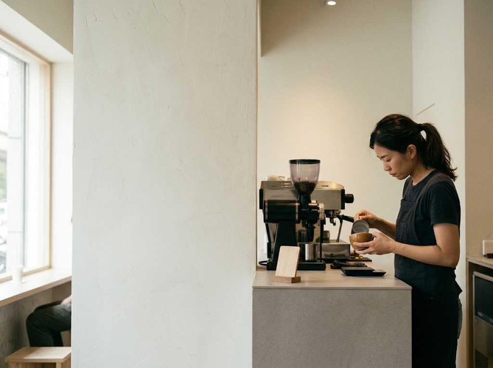
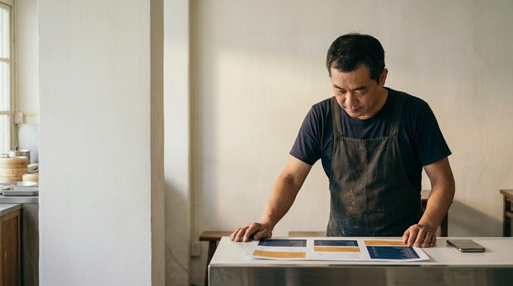

為什麼需要它
改兩個價格，不該要重做一張菜單
小餐廳的價格常常微調，但每次改價都牽動紙本菜單、門口公告、桌上 QR 和外送平台。
以前：每次改價
- 找人重排 A3 菜單，來回溝通好幾天
- 紙本改了，QR 與公告沒跟著改，顧客現場有疑問
- 夥伴用不同版本，不知道哪份才是最新
- 菜單字太小或破版，印出來才發現
現在：手機改一次
- 價格存回雲端，夥伴手機約 15 秒內看到最新價
- A3 菜單自動分欄排版，放不下會自動縮列高或排到背面
- 顧客掃碼看到的電子菜單，永遠是最新價格
- 每次輸出自動編版本號，並記錄誰改了什麼
FEATURES
依店裡的工作分成五大類
點進每一類，看每個功能的實際操作畫面。
Who it's for・適合誰
1～3 家門市、老闆自己顧店的小餐廳
店主和夥伴幾乎都用手機，所以每個畫面都以手機為主設計。選你的店型，看看一天會怎麼用。

早餐店
蛋、肉品價格常微調，品項多，需要整批調價
- 整批調價：選「蛋餅」分類，一次加 5 元，先預覽再套用，套錯一鍵復原
- A3 菜單自動排：四欄分攤，品項多時自動縮列高
- 員工打卡：早班四點半上工，手機打卡不用排隊

小吃店
菜單項目多，要印得清楚大方，長輩客人也看得清
- 大字清楚：A3 菜單字級大、對比高，長輩看得清楚
- 固定廠商記帳：進貨點廠商、按數字鍵就記好，月結一目了然
- 大單預訂：團體訂餐即時估價，店休日自動擋下

飲料店
季節品項常上下架，要快
- 一鍵隱藏／顯示：夏季限定品上、下架，手指一點就好
- 分店同步：總店改一次，三家分店都跟著更新
- 標示過敏原：12 種標示印在菜單上，也能讓顧客篩選

咖啡廳
活動、節慶、連假公告多，海報範本直接套
- 公告海報：9 類公告、14 個節日範本，內容多自動縮字保證一頁
- 桌號 QR：貼上網址自動編號，客人掃碼看最新菜單
- Wi-Fi 卡：掃碼直接連網，A6 四拼一張 A4
我們刻意不做 POS、不代收金流、不做即時庫存
專心把菜單與文宣做好，不會跟你現在用的收銀機衝突，也不抽交易手續費。
怎麼開始
一家新店，約 30 分鐘做到印出菜單
不用裝軟體、不用買設備。時間以手邊有菜單資料、約 50 項品項估算。
註冊並驗證
輸入公司或商號名稱、統編、Email 與密碼，收 Email 驗證碼。試用立刻開始。
設定精靈
填地址、電話、LINE，上傳 Logo，選配色並即時預覽；之後的菜單、海報、顧客頁都會自動帶入。
建立菜單
套用分類範本，在手機逐項新增；品項多就下載 CSV 範本用 Excel 一次填好上傳。
邀請夥伴、輸出
產生邀請連結給夥伴（一人一個，綁定他的手機）；按「輸出 PDF」拿到 A3 菜單。
Pricing・方案費用
新開店、想一次到位？選開店全包
品牌 Logo、菜單建置、一年訂閱，一次包好。已經有 Logo 和菜單的店家，下面也有單買訂閱的方案。價格皆含稅。
微型開店直通
街邊攤車、小吃、獨立早餐店
- 標準字體 Logo（2 款選 1）
- 20 組配色任選
- 代建 60 項菜單
- 名片 2 盒、A3 護貝菜單 2 張
- 壓克力桌號 QR 立牌 5 組
- 調價助手與 A3 PDF 自動排版
品牌風格旗艦
風格咖啡廳、甜點店、餐酒館
- Logo 3 款提案與完整品牌規格書
- LINE／FB 大頭貼、封面、圖文選單
- 代建最多 150 項菜單
- 名片 5 盒、A3 防水菜單 5 張
- Wi-Fi 牌與桌號 QR 立牌 15 組
- 到店教學一次
多店連鎖成長
2～3 家直營或加盟的餐飲品牌
- 旗艦方案全部內容
- 總部與分店的資料架構
- 一鍵「品牌同步」到各分店
- 跨店價格規則與菜單
- 跨店公告與打卡彙總


旗艦方案內容・BRAND + MENU + 1 YEAR
Logo、品牌規範、菜單、社群素材
加一年訂閱，我們幫你做完
第二年起專業版 599 元／月或年繳 5,990 元，不續訂不收任何費用。
- Logo 設計・3 款提案
依店名與風格，選定後可修改 2 輪；交付 SVG、PNG（淺底、深底、單色） - 完整品牌規格書
色彩、字體、標誌使用規範、禁止用法，12 頁 PDF，印刷廠與設計師都能直接用 - 社群素材套組（LINE、Facebook）
大頭貼、封面照片、LINE 圖文選單（含按鈕連到你的菜單、訂位、地圖） - 菜單建置・最多 150 個品項
你給菜單照片或檔案，我們建好、排好 A3 菜單並套上品牌色與 Logo - 實體物料
名片 5 盒、A3 防水菜單 5 張、Wi-Fi 牌與桌號 QR 立牌 15 組，改價不用重印 - 到店教學 1 次
教老闆與店長用手機改價、輸出菜單、使用打卡與收支 - 專業版一年訂閱
全部功能，含公告海報、顧客電子菜單、桌號 QR、人員班表、店務收支


上為星樂創意自己的素材，你的會依你的店名、色彩與菜單重新設計。
Subscription・單買訂閱
已經有 Logo 和菜單？先試用 14 天，順手再訂
年繳只收 10 個月（送 2 個月）。
基本版
專注紙本菜單與桌號標示的單店
- 菜單工具（手機改價、調價助手、標示、CSV 匯入）
- 無浮水印 A3 菜單 PDF
- 桌號 QR、Wi-Fi 卡
- Logo、外觀配色
- 公告海報、顧客服務頁、交接、店休日曆
專業版
含門市文宣、交接與顧客電子菜單
- 基本版全部功能
- 公告、節慶、特別營業海報
- 顧客服務頁、電子菜單、大單預訂
- 店休日曆、交接紀錄
- 夥伴邀請與停用管理
- 外送平台上架檔（推出後優先使用）
有分店？加購「多門市」
專業版＋每家分店 399 元／月（品牌總部另計）。用清單一次建立分店，繼承總店的顏色、Logo 與菜單，各分店保有自己的地址、電話與營業時間。
付款方式：目前以轉帳開通；信用卡定期定額與電子發票即將開放。開店全包付款：訂金 50%，交付確認後付清尾款。
想談開店全包、或有任何問題
請從免費試用註冊後留言，或透過 LINE 官方帳號與我們聯絡（正式開賣前會公布聯絡方式）。
可以放心的地方
從第一線的店務需求長出來的
之後依實際營運需求持續開發，逐步發展成涵蓋菜單、人事與收支的完整店務顧問工具。
每家店資料獨立
各有自己的試算表與資料夾，互不相通；也會唯讀分享一份給店主備份。
夥伴可隨時停用
夥伴離職，一鍵停用，那支手機立刻不能再修改。
登入有驗證碼
統編＋密碼＋Email 驗證碼，輸入錯誤太多次會暫時鎖定。
常見問題
開店的人最常問的事
開店全包有哪些方案？之後要續訂嗎？
共三階：微型開店直通 8,800 元、品牌風格旗艦 18,800 元、多店連鎖成長 36,800 元（含 2 店），首年都含系統訂閱。以旗艦為例，第一年 18,800 元，包含 Logo 設計（3 款提案）、完整品牌規格書、LINE 與 Facebook 的大頭貼、封面照片與圖文選單、最多 150 個品項的菜單建置、名片與 A3 防水菜單與桌號 QR 立牌等實體物料、到店教學一次，以及專業版一年訂閱。第二年起只需要訂閱費（專業版 599 元／月或年繳 5,990 元）；不續訂的話，Logo、規範書與社群素材仍是你的，可繼續使用。
需要先準備什麼才能註冊？
需要公司或商號的名稱與統編、一個收得到信的 Email。統編在註冊時登錄，之後不能自行修改；公司名稱 180 天內修改需要客服審核。
到期忘了續訂會怎樣？資料會不見嗎？
不會馬上消失，有一段緩衝：
我的資料存在哪裡？別家店看得到嗎？
每家店有獨立的試算表與雲端資料夾，資料互相隔離。系統也會把試算表以唯讀方式分享給店主信箱，方便備份；店主自己不用管理雲端空間。
需要買電腦或專用印表機嗎？
不需要，從註冊到輸出都能在手機完成。輸出的是標準 A3 PDF，可交給印刷廠、影印店，或使用提供 A3 列印的超商雲端列印（請先向門市確認機型與紙張）。
菜單品項太多，一頁放不下怎麼辦？
系統會先把四欄平均分攤並拉齊留白；再多會自動縮小列高；還是放不下時，整個分類排到背面。若你不想印雙面，可勾選「只印單面」，系統會告訴你還差幾列、建議隱藏哪些。
夥伴離職了怎麼辦？會不會被亂改價？
在「帳號」頁把該夥伴停用，那支手機立刻不能再修改，也看不到資料。修改紀錄會留下誰改了哪些價格。新夥伴用新的邀請連結加入即可（一個連結只能一個人用）。
可以幫我上架 Uber Eats、foodpanda 嗎？
還在開發。規劃是由你的菜單輸出兩個平台的上架格式，並可設定平台加成與取整。專業版店家推出後可優先使用；現在不要等這個功能才開始用，菜單與文宣的部分已經能用。
多門市怎麼收費、怎麼運作？
總部 999 元／月，加每家分店 399 元／月。總店用清單一次建立分店，分店繼承總店的顏色、Logo 與菜單，並保有自己的地址、電話、營業時間與 LINE。分店的授權跟著總店；可把總店菜單批量套用到分店。分店共用同一個統編，所以由總店店長登入後進入各分店管理。